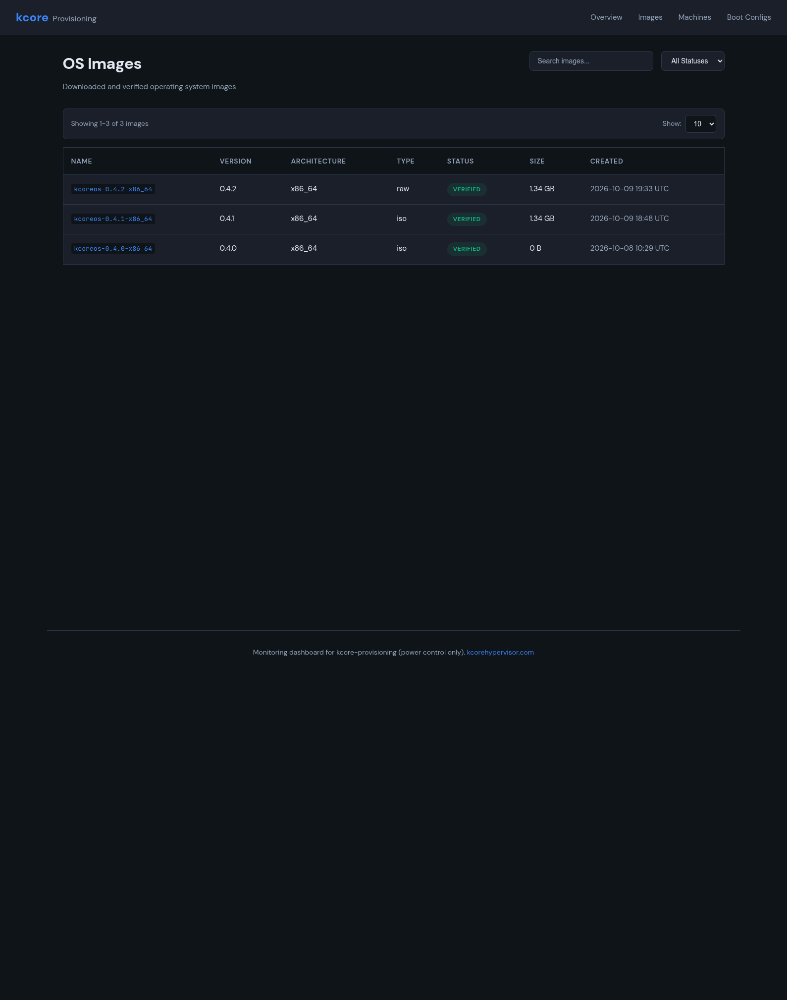
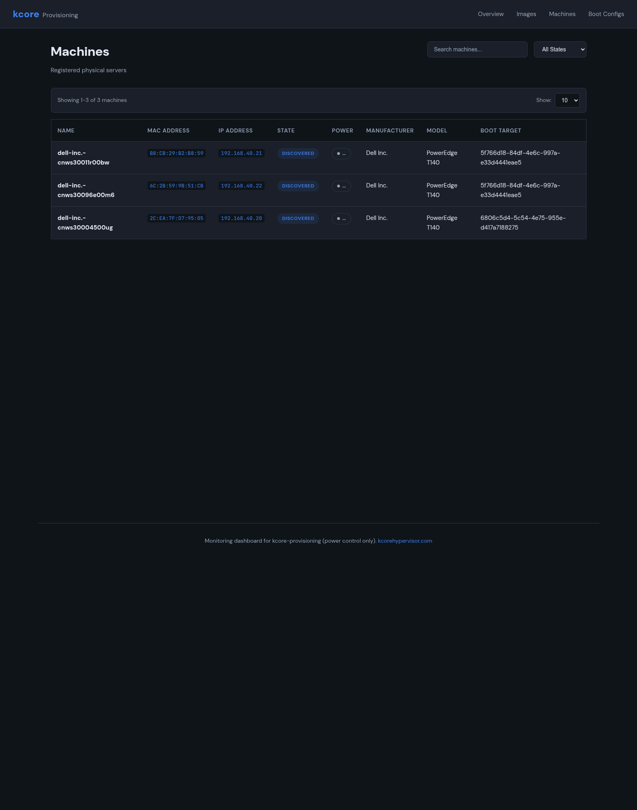
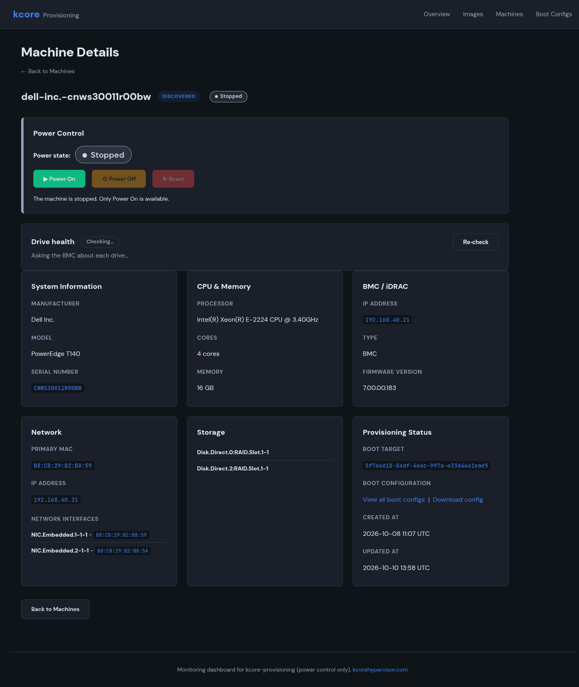

One kcore node from an evaluation ISO is a lab job. A rack of PowerEdge boxes is a different job. You want the machine list, an image you already checked, a boot target, and a way to turn the host on without walking the row with a keyboard.
kcore-provisioning keeps those on one controller. It talks to Dell iDRAC over IPMI and Redfish, and it netboots kcore with UEFI HTTP boot. A ThinkCentre has no BMC, so the same controller sends a Wake-on-LAN magic packet to the NIC. The dashboard is the operator view: images, machines, boot configs, and power. The screenshots are from the lab. Look at the layout.
What the dashboard shows
Overview is the fleet page. It counts OS images, how many of those are verified, and how many machines are provisioned, still installing, or failed. It refreshes every ten seconds from the controller API. The links go to Images, Machines, and Boot Configs. Recent activity lists the latest events when there are any.
Open Overview. That is the list of hosts that are ready.
Feature list
- Verified OS images — downloaded images with name, version, architecture, type, verification status, size, and created time. Filter by verified, pending, or failed.
- Machine inventory — registered physical servers with name, MAC, IP, state, power state, manufacturer, model, and assigned boot target.
- BMC / iDRAC detail — per machine: manufacturer, model, serial, CPU, cores, memory, BMC IP and firmware, NIC MACs, and storage devices from the BMC.
- Power — Power On, Power Off, and Reset on the machine page when the host has a BMC. A machine with no BMC, such as a Lenovo ThinkCentre, uses Wake on the same page. The controller sends the magic packet to the stored MAC. Install progress still comes from the provisioner, not from that button.
- Drive health — ask the BMC about each drive and re-check without a separate hardware tool.
- Boot configurations — which machine boots which image, with MAC, kernel parameters when set, and a config URL you can view or download.
- Netboot path — UEFI HTTP boot of kcore after BMC configuration over IPMI or Redfish, not a USB stick per host.
- API-backed — the page reads the provisioning controller API, so the same facts can feed automation instead of living only in a console.

Why a fleet is easier this way
Doing this by hand falls apart after a few nodes. Someone images each disk, sets the boot order, and writes down which MAC got which build. The provisioner shortens that loop:
- Register or discover the machine once. The inventory stores MAC, BMC address, model, and NICs.
- Keep a small set of verified images. Operators pick a known-good version instead of copying ISOs by hand.
- Attach a boot configuration to the machine. The target image is explicit and downloadable.
- Power the host from the same page. A Dell uses the BMC. A Lenovo with no BMC gets Wake-on-LAN.
- Watch Overview for provisioned versus failed while the controller does the work.
You pick the image, the machine is already in the inventory, and you power it on. The hardware is the hardware you already racked.

A machine page in practice
Open one host. Power sits next to drive health. CPU, memory, BMC firmware, NICs, and disks are on the same screen. The boot target is there too, and you can download the config. You stay off the iDRAC page, the PXE UI, and the wiki note that used to hold the kernel line.

Where this sits in kcore
After a node is installed, VMs and clusters still go through kctl, YAML, and the Terraform provider. The provisioner is how the bare metal gets into that fleet. One host or a small lab still starts from the evaluation ISO. A rack starts from the provisioner.
For IPMI, Redfish, and UEFI HTTP boot, see features. For node join and approval after install, see the add-node and installation guides.
Conclusion
The machine list, the images, the boot target, and the power button used to live in four tools. They now live on one controller and one dashboard. A checked image, a discovered machine, a boot config, and either the BMC or a Wake-on-LAN packet is enough to bring the next server up.
Questions: team@tacconiconsulting.com.